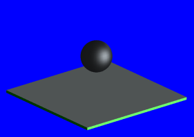

From the Method list, select Gouraud.
Click Start Shade.

Aspects to note:
No texture mapping on flat surface.
The sphere is rendered more smoothly than with the Flat method.
Background color is truncated to one color.
Click Erase Shade.